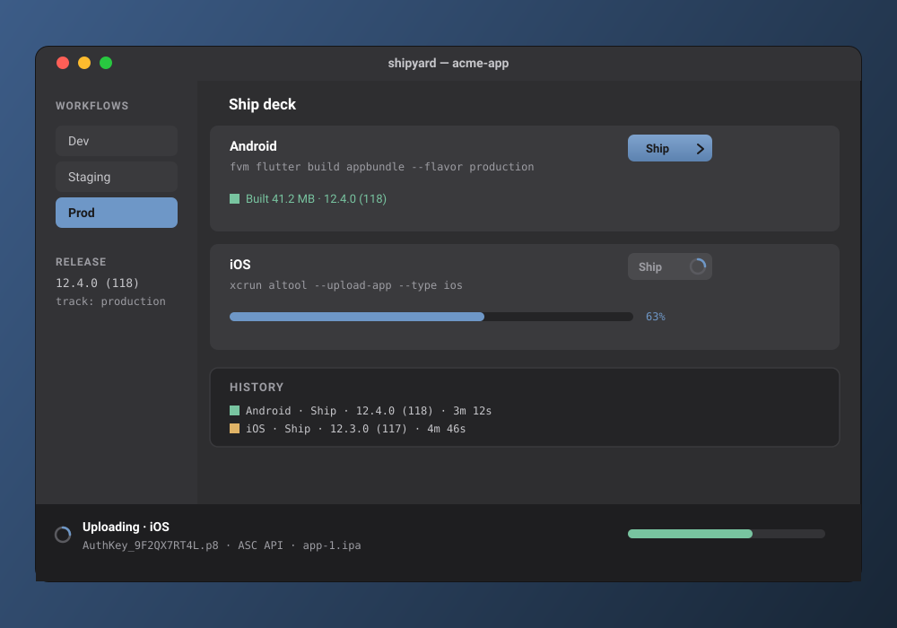

Build once,
ship to both stores.
Shipyard is a macOS app that runs your Flutter build command, then uploads the artifact it just produced to TestFlight or Google Play. No fastlane, no Ruby, no third-party orchestration.
The only external binary it touches is Apple's own xcrun altool, since Apple exposes no HTTP endpoint for uploads; Shipyard runs it directly and does everything else in-process.

Workflows, not scripts
Each project keeps its store credentials once and any number of named workflows, such as Dev, Staging, or Prod, each holding a git ref to build, its .env, an Android and an iOS build command, and a Play release target (track and status). Switch workflows and every one of those swaps with it.
- Ship
- One tap per platform: run the build command, then upload whatever it produced. The split button also offers Build only and Upload last build, so you can build now and upload later without rebuilding. Ship both runs Android then iOS in sequence.
- Reproducible builds
- Give a workflow a branch, tag, or commit and Shipyard builds it in an isolated
git worktreeof that ref: a clean build that never touches your working tree, removed again once the build finishes. Leave the ref blank to build the working tree as-is, uncommitted changes included. - Gitignored inputs
- A fresh worktree only has committed files, so Shipyard writes the workflow's
.envinto it before codegen, and copies gitignored carry-over paths, such asandroid/key.propertiesor Firebase config, from your working checkout. Signing secrets themselves are never copied into Shipyard. - Upload, not exit code
flutter build appbundlecan exit non-zero on a benign debug-symbol strip step. Shipyard treats the produced.aab/.ipaas the real success signal, not the shell exit code.
fvm flutter pub get && fvm dart run build_runner build --delete-conflicting-outputs && fvm flutter build appbundle --flavor development --target lib/main_development.dartfvm flutter clean && fvm flutter build appbundle --flavor production \
--target lib/main_production.dart --obfuscate --split-debug-info=build/symbolsThe ship deck
The daily surface is one row per platform: the destination, the exact command that will run, and a live status line. Configuration (build commands, .env, release targets) lives one level down, behind Configure.
Sample ship deck state, illustrative · matches the real command syntax
Play uploads run in-process: a service-account JWT exchanges for an OAuth2 token, then the Play Developer API's edits.insert, an upload of the bundle, assigning the version code to the track, and commit. A brand-new Play app may reject completed on its first upload; use draft, finalize once in the Play web UI, then completed afterward. Shipping to production as completed asks for confirmation first. TestFlight uploads copy the .p8 key to where altool looks for it, then run the command above; external testers need a one-time Beta App Review, internal testers (100 or fewer) don't.
Every run, kept
Every build and upload lands in a persisted history: result, version and build number, duration, and the artifact path and size. It's stashed durably, so an artifact you built yesterday is still there to upload today, even after a restart.
Sample history rows, illustrative · not a real project's ship log
What it needs
- macOS
- The app itself, and the only place
xcrun altoolexists, which is why iOS uploads are macOS-only. - Flutter, via FVM
- Build commands are run through a login shell so
fvm,flutter, andxcrunresolve from your normal PATH, the same as a terminal build. - Apple API key
- An App Store Connect key: Key ID, Issuer ID, and the
.p8file, referenced by path only. - Play service account
- A Google Play Developer API service-account JSON, referenced by path only. The package name is auto-detected from the build flavor.
- Not App Store distributed
- Shipyard runs unsandboxed so it can spawn build tools and read arbitrary project and credential paths: a local developer utility, installed straight into
/Applications, not shipped through the Mac App Store.
Support
Shipyard is in development for macOS and isn't publicly distributed yet. For questions or bug reports, email directly and I'll get back to you.
danijel@danyzmaj.com